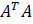
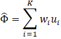

In this post, I attempt to explain the premise of eigenfaces. In essence, it is a dimensionality-reduction technique. It’s not the most elegant solution to the problem of face recognition, but its crudeness allows for a relatively simple and fast implementation. If you’d like to know more, I highly suggest Matthew Turk and Alex Pentland’s seminal 1991 paper on the matter, Eigenfaces for Recognition (it’s how I learned about eigenfaces).
What sets eigenfaces apart is the fact they do not actually look for any specific features. This is where principal component analysis (PCA) comes into play. The goal of PCA is to find “principal components” of a dataset that represent all or most of the variation in said dataset. In our case, eigenfaces would be the principal components of the set of faces. In other words, anything (and I mean anything) could make the face look different than another face, and the eigenface algorithm looks for this – the greatest sources of variation – rather than defined features such as eyes and noses. The downside? Well we have absolutely no idea what the computer learns to be a certain face, as it does this in an unsupervised fashion, so it’s possible for the algorithm to focus on features that are not the face (such as the background) if the dataset is not preprocessed sufficiently to remove “impurities.”
Imagine we have an image of a face of pixels. Such an image is two-dimensional – meaning we can represent it as a 2D vector ( array in our case). Each of the values in this array corresponds to a pixel in the image, specifically we could write its intensity. The problem is that dealing with multi-dimensional vectors in pattern recognition leads to a lot of problems, including the difficulty of computations. It’s better to represent this image as a vector of dimensions (one-dimensional). This has the consequence of each image effectively becomes a point in dimensional space – we’ll call this the face space because each point in the space is a face. This concept is a bit confusing so let me illustrate with an example. Say we have a very small image: 2×2 pixels. We can write this as a 4×1 vector. How many coordinates do you need to represent a point in 4-dimensional space? 4. How many values are in the 4×1 vector we made out of the image? 4. In this way, each 2×2 image becomes a set of coordinates, a.k.a. a point, in 4-dimensional space. Now the basics of the dimensionality-reduction I mentioned earlier should make more sense.
Now how do we actually calculate eigenfaces? Say we have a set of training images: is the ith image in the set and is the number of images in the set. The first step is to represent these as 1D vectors as we discussed previously, say under the notation . The next step is to calculate the average, or mean, face. This just amounts to adding all the face vectors up, and dividing by the number of faces:
Now that we have a mean face, we need to determine how much each face differs from it. As you’ve probably guessed, it’s just: . Now the next step is a bit tricky. We’re actually going to find our principal components. The way this is done is through finding the eigenvectors of the dataset’s covariance matrix. That’s a mouthful. The concept of eigenvectors is actually pretty simple. It just means if you multiply a matrix A by the eigenvector v, the result will be a scalar multiple of v (Av=cv). This scalar multiple c is known as an eigenvalue. Consequently, c and v are eigenvalues and eigenvectors of the matrix A respectively. By the way, “eigen” in German means “own,” which gives hint as an eigenvector times a matrix is itself times a value. A covariance matrix is a bit more complicated. First we need to define covariance. Surprisingly, covariance tells you how two variables vary together. The covariance of two variables can be calculated as: cov(x,y) = E[xy] – E[x]E[y], where E is expected value, or just mean (so E[x] is the mean of x). A covariance matrix tells us the covariance of corresponding values between two vectors. So the (i,j) element of the covariance matrix between some arbitrary vectors X and Y tells us the covariance between the ith element of X and the jth element of Y. As the eigenfaces are the eigenvectors of the covariance matrix, they tell us which points (“faces”) in our face space contain the most variance of the dataset. Our covariance matrix can be written as:
where . The T in the superscript above A means transpose. To take the transpose of a matrix, you just write its columns as rows and vice versa. As expected, C is a matrix while A is a matrix. Now, we must find the eigenvectors, call them , of . But there’s a problem…is a matrix! Imagine if each image was 256×256 pixels – that would be a 65536×65536 matrix, which we couldn’t ever hope to calculate the eigenvectors ( in number) of in a reasonable time frame. Luckily, we can do a little math to reduce this daunting task. Let’s look at the matrix  (remember, order when multiplying matrices matters). The dimensionality of this matrix is , or the number of training images squared. Say we had 40 training images, that would only be a 40×40 matrix – much more manageable (only number of eigenvectors)! But aren’t we looking for the eigenvectors of the covariance matrix, not this weird flip-around thing? Well the thing is, if we can find the eigenvectors of , we can find the eigenvectors of . Check it out:
This is just the definition of the eigenvectors, , of . Now, we can multiply both sides of this equation by A, which yields:
Since is the covariance matrix, we can rewrite this as:
Now, remembering our definition of eigenvectors, we can see that are the eigenvectors of C. Thus:
We now have a formula to calculate . It is important to normalize here. What this means is to set the norm of the vector equal to zero: . Setting the norm equal to 1 is equivalent to finding a “unit vector.” In this case of a one-dimensional vector, the normalized vector is the vector multiple by the reciprocal of the square root of all the sum of all the elements where each element is squared (this is just the Euclidean norm which can be thought of as a conceptual extension of the Pythagorean theorem). has many more eigenvectors than , but we only need to compute the best (those with the largest eigenvalues) eigenvectors since this contains all the information we need (the corresponding eigenvalues of the rest of the eigenvectors are zero). In practice, often a small amount of the dataset represents most of the variation in it (e.g. a quarter of the set would contain 95% of the total variation). As a result, to further reduce computation, we only keep the first eigenvectors, or eigenfaces as we will now call them. These eigenfaces correspond to a point on the face space – as a result they are technically “faces,” but in practice look really creepily ghost-like, as they aren’t faces themselves but rather represent the variation of the faces in the dataset. In other words, each face in the dataset can be reconstructed by a linear combination of the eigenfaces.
Now that we know how to calculate eigenfaces, how do we actually pull off face recognition with them? In essence, we project the new face, or test face, in question onto our eigenspace (the subspace of our face space when we trimmed it down in the previous step). We then measure the distance between it and our eigenspace and face classes. Our face classes will be calculated by projecting the test face onto each eigenface. In larger datasets, the face classes can be a subset of images pertaining to a particular person. To begin, we subtract the mean face from the test face:
We can now calculate “weights” which represent how much each eigenface matters when reconstructing the test face. We project the test face on the eigenspace:

where are weights are defined as: . As a result, we can write the test face as a pattern vector:
Now we find the minimum distance between the test face and face class:
where the second term in the argument is the face class. Now, if our distance within our eigenspace (between the test face and the face class) is below our threshold (), our test face is matched to the face from our training set (this could mean a specific person).
Now, there are many kinds of images, so by sheer probability, some image would be close to one of our face classes, even if it is not a face. To prevent, this we also measure the distance between the test face and the eigenspace (to make sure it’s actually a face, albeit an unknown one). We calculate the distance as:
and similarly, if our distance is less than an arbitrary threshold, , the face is detected and classified as an unknown face. Should a test face be far away from the eigenspace, it would be classified as not a face.
It might be a little hard to picture what the distances within and from the eigenspace means. Picture the eigenspace as a flat plane and the face classes as circles within that plane. Now image our test face (say a flower) as a point floating high above one of these circles. It is within the enclosure of a face class, which means the eigenface algorithm recognizes it as a face from the training data. However, it’s a flower so the distance from the eigenspace (it’s high above the circle) is large, which means despite falling within a face class, it is not a face.
That’s how the basic algorithm works. There’s some other tips and tricks regarding implementation, such as computational methods to simplify computing the distance from the eigenspace. But this is the eigenface algorithm itself.
In regards to artificial neural networks, an implementation could be constructed quite simply. The input layer would be the test face. The weights of between the input layer and the hidden layer would be the eigenfaces we found, so the input to each neuron is a pattern vector. Lastly, the output of the network would be the projection of the test face. This is the most basic neural network implementation and can be expanded with more components (to account for face classes and more).